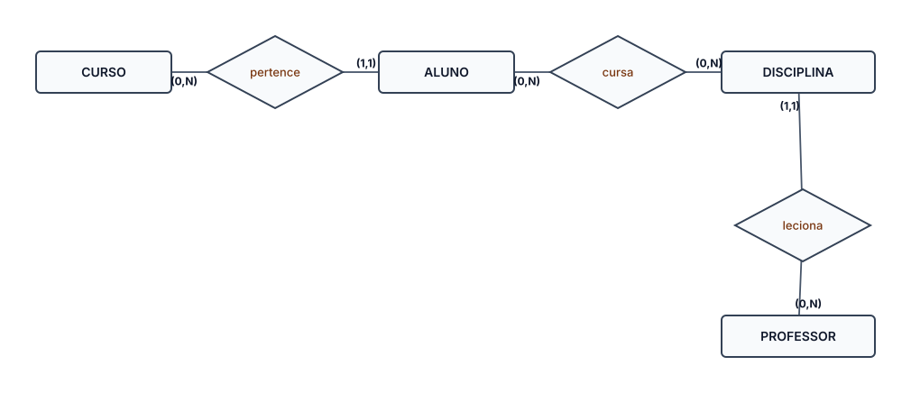

Entidades, chaves e as três cardinalidades — a base para normalizar
Relembrando com um exemplo concreto: a entidade ALUNO, com seus atributos e chaves.
| atributo | tipo | chave |
|---|---|---|
| matricula_id | INT | Primária |
| nome | VARCHAR | — |
| VARCHAR | Única | |
| curso_id | INT | Estrangeira → CURSO |
matriculaid identifica cada aluno de forma única (PK). email não pode se repetir entre alunos (chave única). cursoid aponta para a tabela CURSO (FK) — e é aí que entra a cardinalidade.
Cada ocorrência de uma entidade se relaciona com no máximo uma ocorrência da outra — e vice-versa.
Uma pessoa tem um único passaporte, e um passaporte pertence a uma única pessoa. A FK pode ficar em qualquer um dos dois lados — normalmente no lado que é opcional (nem toda pessoa tem passaporte).
Cada ocorrência de uma entidade pode se relacionar com várias ocorrências da outra, mas cada ocorrência da segunda se relaciona com apenas uma da primeira.
Um curso tem vários alunos, mas cada aluno pertence a um único curso. A chave estrangeira (curso_id) fica do lado "muitos" — na tabela ALUNO.
Cada ocorrência de uma entidade pode se relacionar com várias ocorrências da outra, e vice-versa.
Um aluno cursa várias disciplinas, e uma disciplina tem vários alunos. Isso não cabe numa FK direta — precisa de uma tabela associativa (ex: MATRICULA_DISCIPLINA) com chave composta. Guarde essa ideia: ela vai voltar quando falarmos de 2FN.
Normalização é o processo de organizar os atributos e tabelas de um banco de dados relacional seguindo um conjunto de regras formais — as formas normais (1FN, 2FN, 3FN...) — com o objetivo de eliminar redundância de dados e evitar as anomalias de inserção, exclusão e atualização, sem perder nenhuma informação no processo.
Modelar bem as entidades e cardinalidades não garante que as tabelas guardem dados sem repetição. É exatamente esse problema que a normalização resolve — e vamos ver isso a partir de agora.
Redundância, inconsistência e anomalias
Imagine uma secretaria que guarda matrículas numa única tabela achatada, misturando dados de aluno, curso e disciplina na mesma linha:
| matricula_id | aluno | curso | disciplina | professor |
|---|---|---|---|---|
| 1 | Ana Souza | Análise e Desenvolvimento | Banco de Dados | Carla Reis |
| 2 | Ana Souza | Análise e Desenvolvimento | Programação Web | Diego Alves |
| 3 | Bruno Lima | Análise e Desenvolvimento | Banco de Dados | Carla Reis |
"Ana Souza" e "Análise e Desenvolvimento" aparecem repetidos. Se o nome do curso mudar, precisa mudar em todas as linhas.
A tabela anterior esconde, na verdade, quatro entidades diferentes espremidas em uma só — exatamente as que revisamos no início da aula:

Quando uma tabela mistura entidades com cardinalidades diferentes numa só estrutura, a redundância é inevitável. Normalizar é devolver cada entidade à sua própria tabela.
Assista: o professor renomeia o curso de "ADS" para o nome completo. Mas ele só tem acesso pra editar uma linha por vez.
Trocar o nome do curso em uma linha não troca nas outras — alguem precisa lembrar de editar todas, manualmente. Esquecer uma gera dado inconsistente na hora.
Não dá pra cadastrar um curso novo sem já ter um aluno matriculado nele.
Se o único aluno de um curso for removido, a informação do curso some junto.
Como acabamos de ver: mudar o nome do professor ou do curso exige atualizar todas as linhas repetidas — esquecer uma gera inconsistência.
A normalização é o processo de reorganizar as tabelas em etapas — as formas normais — para eliminar essas anomalias.
Atomicidade e fim dos grupos repetidos
Atômico vem do grego "que não pode ser dividido". Numa tabela, significa que o valor de uma célula precisa ser uma unidade só — sem esconder vários valores diferentes dentro dela. Um telefone inteiro (11999990000) é atômico; uma célula com 11999990000, 1133330000 não é, porque na real ali têm dois valores disfarçados de um só.
É o requisito mínimo para uma tabela ser considerada parte do modelo relacional — sem ele, nem faz sentido falar em 2FN ou 3FN.
Uma tabela de clientes guardando vários telefones na mesma célula, separados por vírgula:
| cliente_id | nome | telefones |
|---|---|---|
| 1 | Ana Souza | 11999990000, 1133330000 |
| 2 | Bruno Lima | 11988887777 |
A coluna telefones guarda mais de um valor — não é atômica. Buscar "quem tem o telefone 1133330000" fica muito difícil.
A solução é criar uma linha por telefone, numa tabela separada — cada célula volta a guardar um único valor:
| cliente_id | nome |
|---|---|
| 1 | Ana Souza |
| 2 | Bruno Lima |
| cliente_id | telefone |
|---|---|
| 1 | 11999990000 |
| 1 | 1133330000 |
| 2 | 11988887777 |
A regra formal é bonita, mas na hora de corrigir uma tabela de verdade você segue um roteiro mecânico. Guarde este fluxo:
Uma loja virtual guarda os produtos numa tabela produto, com uma coluna categorias juntando tudo numa célula só:
| produto_id | nome | categorias |
|---|---|---|
| 1 | Notebook Gamer X | Eletrônicos, Informática |
| 2 | Fone Bluetooth | Eletrônicos, Áudio |
A coluna categorias guarda mais de um valor na mesma célula — não é atômica. Buscar todos os produtos da categoria Áudio vira um problema de texto, não de banco de dados.
Passo 1 do checklist: a célula guarda mais de um valor → crie uma tabela nova, com uma linha para cada categoria, ligada pela chave do produto.
| produto_id | nome |
|---|---|
| 1 | Notebook Gamer X |
| 2 | Fone Bluetooth |
| produto_id | categoria |
|---|---|
| 1 | Eletrônicos |
| 1 | Informática |
| 2 | Eletrônicos |
| 2 | Áudio |
Uma escola guarda as notas do aluno em colunas separadas — uma para cada avaliação:
| aluno_id | nome | nota1 | nota2 | nota3 |
|---|---|---|---|---|
| 1 | Ana Souza | 7.5 | 8.0 | 6.5 |
| 2 | Bruno Lima | 8.5 | 9.0 | — |
nota1, nota2 e nota3 são um grupo de colunas repetidas. E se houver uma 4ª avaliação? Não tem onde guardar sem alterar a estrutura da tabela.
Passo 2 do checklist: colunas repetidas (nota1, nota2, nota3) recebem o mesmo tratamento — uma linha por avaliação, numa tabela separada.
| aluno_id | nome |
|---|---|
| 1 | Ana Souza |
| 2 | Bruno Lima |
| aluno_id | numero_avaliacao | valor |
|---|---|---|
| 1 | 1 | 7.5 |
| 1 | 2 | 8.0 |
| 1 | 3 | 6.5 |
| 2 | 1 | 8.5 |
| 2 | 2 | 9.0 |
Dependência funcional total, não parcial
Só faz sentido avaliar a 2FN em tabelas que já estão na 1FN e que têm uma chave primária composta (formada por duas ou mais colunas).
Todo atributo que não faz parte da chave deve depender da chave primária inteira — não apenas de uma parte dela. Depender só de uma parte é chamado de dependência parcial.
Uma tabela de itens de pedido, com chave composta (pedidoid, produtoid):
| pedido_id | produto_id | quantidade | nome_produto | preco_produto |
|---|---|---|---|---|
| 101 | P01 | 2 | Teclado Mecânico | 250.00 |
| 102 | P01 | 1 | Teclado Mecânico | 250.00 |
| 102 | P02 | 3 | Mouse Gamer | 120.00 |
nomeproduto e precoproduto dependem só de produto_id, não da chave composta inteira — por isso se repetem toda vez que o produto aparece em outro pedido.
Tudo que depende só de produtoid vai para sua própria tabela; o que depende da chave composta fica em pedidoitem:
| pedido_id | produto_id | quantidade |
|---|---|---|
| 101 | P01 | 2 |
| 102 | P01 | 1 |
| 102 | P02 | 3 |
| produto_id | nome_produto | preco_produto |
|---|---|---|
| P01 | Teclado Mecânico | 250.00 |
| P02 | Mouse Gamer | 120.00 |
Assim como a 1FN, a 2FN também vira um roteiro mecânico — só que ele só entra em ação quando a chave é composta:
Uma biblioteca registra empréstimos numa tabela com chave composta (livroid, usuarioid):
| livro_id | usuario_id | data_emprestimo | titulo_livro | autor_livro |
|---|---|---|---|---|
| L01 | U01 | 02/03/2026 | Clean Code | Robert C. Martin |
| L01 | U02 | 10/03/2026 | Clean Code | Robert C. Martin |
| L02 | U01 | 05/03/2026 | O Programador Pragmático | Andrew Hunt |
titulolivro e autorlivro dependem só de livro_id — não da chave composta inteira. Por isso se repetem toda vez que o mesmo livro é emprestado a outro usuário.
Passo 2 do checklist: titulolivro e autorlivro dependem só de livro_id (parte da chave) → viram uma tabela livro separada.
| livro_id | usuario_id | data_emprestimo |
|---|---|---|
| L01 | U01 | 02/03/2026 |
| L01 | U02 | 10/03/2026 |
| L02 | U01 | 05/03/2026 |
| livro_id | titulo | autor |
|---|---|---|
| L01 | Clean Code | Robert C. Martin |
| L02 | O Programador Pragmático | Andrew Hunt |
Uma empresa aloca funcionários em projetos numa tabela com chave composta (funcionarioid, projetoid):
| funcionario_id | projeto_id | horas_alocadas | nome_funcionario | cargo_funcionario |
|---|---|---|---|---|
| F01 | PJ01 | 120 | Marina Costa | Dev Backend |
| F01 | PJ02 | 40 | Marina Costa | Dev Backend |
| F02 | PJ01 | 80 | Yuri Tanaka | UX Designer |
nomefuncionario e cargofuncionario dependem só de funcionario_id — repetem toda vez que o mesmo funcionário aparece em outro projeto.
Passo 2 do checklist: nomefuncionario e cargofuncionario dependem só de funcionario_id (parte da chave) → viram uma tabela funcionario separada.
| funcionario_id | projeto_id | horas_alocadas |
|---|---|---|
| F01 | PJ01 | 120 |
| F01 | PJ02 | 40 |
| F02 | PJ01 | 80 |
| funcionario_id | nome | cargo |
|---|---|---|
| F01 | Marina Costa | Dev Backend |
| F02 | Yuri Tanaka | UX Designer |
Na aula 2 vamos completar o processo com a 3FN e resolver casos práticos mais completos.
Abaixo está uma tabela desnormalizada de matrículas. Aplique o que vimos hoje para corrigi-la.
| aluno_id | aluno_nome | curso_id | curso_nome | disciplina_id | disciplina_nome | professor |
|---|---|---|---|---|---|---|
| 1 | Ana Souza | 10 | ADS | 100 | Banco de Dados | Carla Reis |
| 1 | Ana Souza | 10 | ADS | 101 | Programação Web | Diego Alves |
| 2 | Bruno Lima | 10 | ADS | 100 | Banco de Dados | Carla Reis |